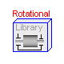
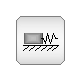

Library for mechanical systems


Information
This package contains components to model mechanical systems.
Currently, the following subpackages are available:
Rotational 1-dimensional rotational mechanical components.
Translational 1-dimensional translational mechanical components.
It is planned to add a subpackage for multibody systems to
model 3-dimensional mechanical systems.
- Main Author:
- Martin Otter
Deutsches Zentrum für Luft und Raumfahrt e.V. (DLR)
Institut für Robotik und Mechatronik
Postfach 1116
D-82230 Wessling
Germany
email: Martin.Otter@dlr.de
Release Notes:
- Oct. 21, 2002
by Martin Otter
and Christian Schweiger:
New components and examples in package Rotational.
- Oct. 24, 1999
by Martin Otter:
Changes according to the Twente meeting introduced. Especially,
package Rotational1D renamed to Rotational and package
Translational1D renamed to Translational. For the particular
changes in these packages, see the corresponding package
release notes.
- June 30, 1999
by Martin Otter:
Realized a first version for 1-dimensional rotational mechanical
systems based on an existing Dymola library of Martin Otter and
Hilding Elmqvist.
Copyright © 1999-2002, Modelica Association and DLR.
The Modelica package is free software; it can be redistributed and/or modified
under the terms of the Modelica license, see the license conditions
and the accompanying disclaimer in the documentation of package
Modelica in file "Modelica/package.mo".
HTML-documentation generated by Dymola Wed Dec 11 11:13:07 2002
.